Zona Gamer es un sitio dedicado a ofrecer contenido detallado sobre videojuegos de distintas generaciones. Aquí encontrarás sinopsis completas, análisis generales y recomendaciones de títulos que marcaron historia. La idea es que cada juego tenga información suficiente para que realmente entiendas de qué trata y si vale la pena jugarlo.

Plataformas: PS3, Xbox 360, PC
Duración: 6–8 horas
Raiden es un cyborg ninja que vive en un mundo donde las guerras son controladas por corporaciones privadas. A lo largo de su misión, deberá enfrentarse a enemigos cada vez más peligrosos mientras cuestiona su propia humanidad y su pasado como soldado. El sistema de combate es rápido, preciso y extremadamente violento, obligando al jugador a dominar cada mecánica. Además, el juego destaca por su increíble banda sonora (OST), que acompaña cada pelea con música épica que aumenta la intensidad. La combinación de acción, narrativa y música crea una experiencia única e inolvidable.
Puntuación Metacritic: 80/100
Puntuación OpenCritic: 82/100

Plataformas: PS4, PS5, PC, Xbox Series X/S
Duración: 12–16 horas
Leon S. Kennedy es enviado a rescatar a la hija del presidente en una remota aldea europea. Lo que parece una misión simple se convierte rápidamente en una pesadilla cuando descubre que los habitantes están infectados por Las Plagas. A medida que avanza, deberá enfrentarse a cultos, criaturas mutadas y situaciones extremadamente peligrosas. La gestión de recursos y la toma de decisiones son clave para sobrevivir. Cada zona presenta nuevos desafíos, manteniendo la tensión constante. Es una experiencia intensa que mezcla acción y terror de manera perfecta.
Puntuación Metacritic: 93/100
Puntuación OpenCritic: 92/100

Plataformas: PS4, PS5, PC, Xbox One, Xbox Series X/S
Duración: 8–10 horas
En medio de un brote zombie que ha destruido Raccoon City, Leon y Claire deben encontrar la forma de sobrevivir. La ciudad está llena de peligros y cada rincón puede esconder una amenaza. A medida que avanzan, descubren los oscuros secretos de la corporación Umbrella. El jugador debe administrar recursos limitados y resolver situaciones bajo presión constante. La presencia de enemigos como Mr. X aumenta la tensión, ya que puede aparecer en cualquier momento. Es uno de los mejores ejemplos de survival horror moderno.
Puntuación Metacritic: 91/100
Puntuación OpenCritic: 90/100

Plataformas: PS1
Duración: 6–8 horas
Harry Mason llega a Silent Hill en busca de su hija desaparecida tras un accidente. Sin embargo, el pueblo está envuelto en una niebla constante y lleno de criaturas extrañas. A medida que avanza, la realidad comienza a distorsionarse, mostrando versiones cada vez más perturbadoras del entorno. La historia se desarrolla lentamente, revelando secretos oscuros que afectan directamente al protagonista. El terror no solo está en los enemigos, sino en la atmósfera y la narrativa. Es un clásico que definió el género del terror psicológico.
Puntuación Metacritic: 86/100
Puntuación OpenCritic: 85/100

Plataformas: PS5, PC
Duración: 12–15 horas
James Sunderland recibe una carta de su esposa fallecida y decide viajar a Silent Hill. Allí encuentra un pueblo vacío cubierto de niebla, donde comienzan a aparecer criaturas que reflejan sus propios miedos. La historia se centra en temas emocionales y psicológicos, explorando la culpa y el dolor. Cada encuentro y escenario tiene un significado profundo dentro de la narrativa. A medida que avanza, el jugador descubre la verdad detrás de la carta. Es una experiencia intensa y reflexiva.
Puntuación Metacritic: 88/100
Puntuación OpenCritic: 87/100

Plataformas: PS1, PC, GameCube
Duración: 6–7 horas
Jill Valentine intenta escapar de Raccoon City mientras el virus se propaga sin control. La ciudad está completamente devastada y llena de enemigos. Sin embargo, la mayor amenaza es Nemesis, una criatura que la persigue constantemente. El jugador debe reaccionar rápido y administrar recursos para sobrevivir. Cada encuentro con Nemesis genera tensión y obliga a tomar decisiones inmediatas. La experiencia es intensa y llena de momentos impredecibles.
Puntuación Metacritic: 79/100
Puntuación OpenCritic: 80/100

Plataformas: PS2, PS3
Duración: 10–12 horas
Kratos, tras convertirse en dios, es traicionado por Zeus y pierde sus poderes. Decidido a vengarse, inicia un viaje épico lleno de combates contra criaturas mitológicas. A lo largo del juego enfrentará desafíos enormes y enemigos colosales. La narrativa está cargada de violencia, traición y determinación. Cada batalla se siente intensa y cinematográfica. Es considerado uno de los mejores juegos de acción de su época.
Puntuación Metacritic: 93/100
Puntuación OpenCritic: 94/100

Plataformas: PS3, Xbox 360, PC
Duración: 10–15 horas
Chuck Greene participa en un programa donde se lucha contra zombies, pero un brote real desata el caos. Mientras intenta sobrevivir, debe proteger a su hija y encontrar medicación para ella. El juego combina acción, exploración y decisiones importantes. A lo largo del camino se enfrenta a psicópatas y hordas de enemigos. Su banda sonora (OST) acompaña perfectamente la acción, generando una mezcla única de tensión y humor oscuro. Es una experiencia diferente dentro del género.
Puntuación Metacritic: 78/100
Puntuación OpenCritic: 79/100

Plataformas: PS4, PS5, PC, Xbox One, Xbox Series X/S, Nintendo Switch
Duración: 8–12 horas (historia)
Los guerreros más poderosos del universo se enfrentan en combates intensos y espectaculares. La historia introduce una nueva amenaza que obliga a los personajes a unirse. El sistema de combate es dinámico y requiere estrategia. Cada pelea es rápida y visualmente impactante. Es un juego que captura perfectamente la esencia del anime. Ideal tanto para fans como para jugadores competitivos.
Puntuación Metacritic: 87/100
Puntuación OpenCritic: 86/100

Plataformas: PS2, Xbox
Duración: 6–8 horas
Black es un shooter en primera persona que destaca por su enfoque en la acción explosiva. El jugador revive misiones a través de interrogatorios, revelando poco a poco la historia. Los escenarios son altamente destructibles, lo que aporta realismo a cada combate. Cada arma se siente potente y el sonido es clave en la experiencia. A medida que avanzas, los enfrentamientos se vuelven más intensos. Es un clásico del género.
Puntuación Metacritic: 80/100
Puntuación OpenCritic: 81/100

Plataformas: PS2, Xbox, PC
Duración: 6–8 horas
Tom Hansen es enviado a investigar un barco en medio de una tormenta. Al llegar, descubre que la tripulación ha sido infectada por una entidad desconocida. El entorno es inestable, con olas que afectan el movimiento del personaje. A medida que avanza, la historia revela experimentos oscuros. El jugador debe enfrentarse tanto a enemigos como al entorno. Es una mezcla interesante de acción y terror.
Puntuación Metacritic: 66/100
Puntuación OpenCritic: 67/100

Género: RPG / Simulación social
Plataformas: PC, PS4, PS Vita
Duración: 60–80 horas
Sinopsis: En un tranquilo pueblo japonés llamado Inaba, comienzan a ocurrir una serie de misteriosos asesinatos relacionados con un canal de televisión que solo aparece en días de lluvia. El protagonista, junto a un grupo de amigos, descubre que puede entrar a ese mundo oculto donde se enfrentan a criaturas conocidas como Sombras. A medida que investigan los crímenes, también desarrollan vínculos personales que afectan directamente sus habilidades en combate. La historia combina vida escolar, relaciones sociales y elementos sobrenaturales de forma única. Su narrativa profunda y su excelente banda sonora (OST) lo convierten en uno de los RPG más queridos de todos los tiempos.
Puntuación Metacritic: 93/100
Puntuación OpenCritic: 94/100

Género: Shooter cooperativo / Acción
Plataformas: PC, PS3, PS4, Xbox 360, Xbox One
Duración: 20+ horas (rejugable)
Sinopsis: Payday 2 pone al jugador en la piel de un criminal profesional que participa en robos organizados junto a un equipo. Desde atracos a bancos hasta misiones más complejas, cada golpe requiere planificación, coordinación y ejecución precisa. El juego permite afrontar las misiones de forma sigilosa o completamente agresiva, ofreciendo múltiples estilos de juego. A medida que avanzas, desbloqueas habilidades, armas y mejoras que cambian la forma de jugar. La experiencia se vuelve aún más intensa en modo cooperativo, donde la comunicación es clave para el éxito. Su jugabilidad dinámica y su constante actualización lo mantienen vigente incluso hoy en día.
Puntuación Metacritic: 79/100
Puntuación OpenCritic: 80/100

Plataformas: PC, Xbox 360, PS4 (Redux)
Duración: 8–12 horas
Sinopsis: Tras una guerra nuclear que devastó la superficie de la Tierra, los supervivientes de Moscú se refugian en los túneles del metro, creando una sociedad fragmentada en distintas facciones. Artyom, un joven que nunca ha salido al exterior, se ve envuelto en una misión crucial para advertir a otras estaciones sobre una amenaza desconocida conocida como los “Oscuros”. A medida que avanza por túneles oscuros, infestados de mutantes y peligros humanos, deberá enfrentarse tanto a criaturas deformadas por la radiación como a conflictos entre distintas ideologías. El viaje lo llevará a cuestionar la realidad del mundo en el que vive y descubrir verdades ocultas sobre la humanidad. Con una atmósfera opresiva, escasez de recursos y una narrativa profunda, Metro 2033 ofrece una experiencia intensa donde cada decisión puede significar la vida o la muerte.
Puntuación Metacritic: 81/100
Puntuación OpenCritic: 82/100

Plataformas: PC, PS4, PS5, Xbox One, Xbox Series X/S, Nintendo Switch
Duración: 20–30 horas (rejugable)
Sinopsis: Hades es un roguelike de acción donde el jugador controla a Zagreus, el hijo de Hades, quien intenta escapar del inframundo para llegar al Olimpo. Cada intento de escape es diferente, ya que los niveles se generan de forma procedural y ofrecen distintos desafíos, enemigos y recompensas. A lo largo de su travesía, Zagreus recibe la ayuda de los dioses del Olimpo, quienes le otorgan poderes especiales que modifican completamente el estilo de juego. Sin embargo, cada derrota lo devuelve al inicio, permitiéndole fortalecer habilidades y desbloquear nuevas mejoras. La narrativa se desarrolla progresivamente con cada intento, profundizando en las relaciones entre personajes y en la historia familiar del protagonista. Con un combate rápido, fluido y altamente estratégico, junto a una banda sonora destacada y un estilo artístico único, Hades logra combinar acción intensa con una narrativa envolvente que invita a jugar una y otra vez.
Puntuación Metacritic: 93/100
Puntuación OpenCritic: 94/100
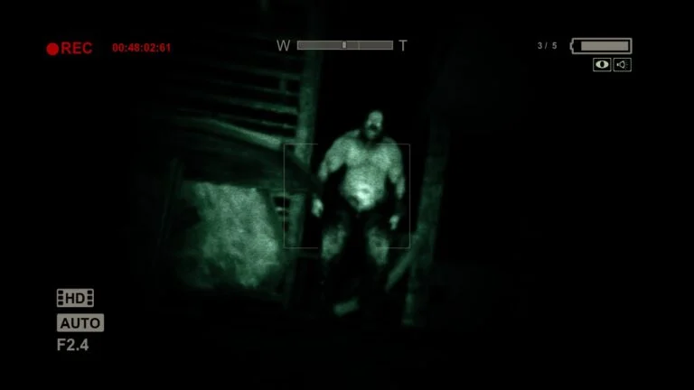
Plataformas: PC, PS4, Xbox One, Nintendo Switch
Duración: 5–7 horas
Sinopsis: En Outlast tomas el papel de Miles Upshur, un periodista de investigación que recibe información sobre actividades sospechosas en el hospital psiquiátrico Mount Massive. Al infiltrarse en el lugar, descubre que ha sido tomado por pacientes extremadamente violentos tras experimentos inhumanos. Sin posibilidad de defenderse, el jugador debe sobrevivir utilizando únicamente una cámara con visión nocturna para orientarse en la oscuridad. A medida que avanza, se revelan oscuros secretos relacionados con experimentos mentales y control psicológico. La tensión es constante, ya que cualquier encuentro puede significar la muerte. La combinación de exploración, sigilo y terror psicológico crea una experiencia intensa donde el miedo es el principal enemigo.
Puntuación Metacritic: 80/100
Puntuación OpenCritic: 81/100
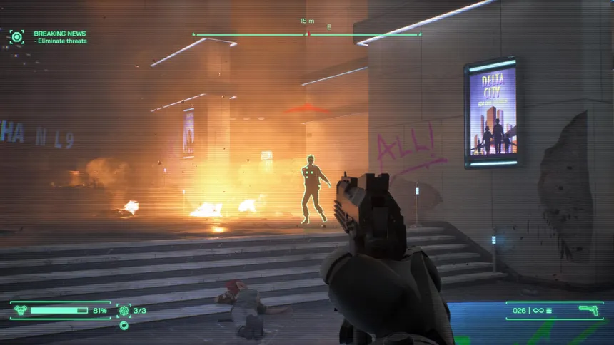
Plataformas: PC, PS5, Xbox Series X/S
Duración: 10–15 horas
Sinopsis: En RoboCop: Rogue City te pones en la piel del icónico policía cibernético en una Detroit dominada por el crimen. Armado con su poderosa Auto-9 y habilidades mejoradas, RoboCop debe imponer la ley en una ciudad donde las bandas criminales y la corrupción están fuera de control. El juego combina acción en primera persona con elementos de investigación, permitiendo al jugador tomar decisiones que afectan el desarrollo de la historia. A lo largo de la campaña, se enfrentarán enemigos cada vez más peligrosos, desde criminales comunes hasta amenazas tecnológicas avanzadas. La narrativa respeta el tono de las películas originales, con una mezcla de acción, crítica social y momentos intensos. Es una experiencia que captura perfectamente la esencia del personaje.
Puntuación Metacritic: 72/100
Puntuación OpenCritic: 73/100
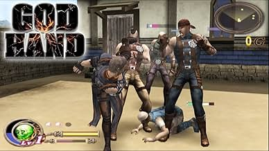
Plataformas: PS2
Duración: 8–12 horas
Sinopsis: God Hand sigue la historia de Gene, un luchador que posee un brazo con poderes sobrenaturales conocido como la “Mano de Dios”. Tras ser perseguido por una organización demoníaca que busca controlar ese poder, deberá enfrentarse a enemigos cada vez más absurdos y peligrosos. El juego destaca por su sistema de combate profundo, donde el jugador puede personalizar ataques y combos a su gusto. La dificultad es elevada, obligando a dominar mecánicas como esquivas y contraataques. Además, el tono del juego mezcla acción intensa con humor exagerado y situaciones ridículas. Con un estilo único y desafiante, God Hand se convirtió en un título de culto dentro de los juegos de acción.
Puntuación Metacritic: 73/100
Puntuación OpenCritic: 75/100
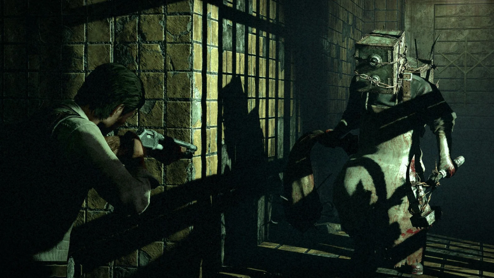
Plataformas: PC, PS3, PS4, Xbox 360, Xbox One
Duración: 12–15 horas
Sinopsis: The Evil Within sigue al detective Sebastian Castellanos, quien tras investigar una escena de crimen masivo es arrastrado a una realidad distorsionada llena de horrores inimaginables. En este mundo retorcido, deberá enfrentarse a criaturas grotescas, trampas mortales y escenarios que cambian constantemente, desafiando su percepción de la realidad. A medida que avanza, la historia revela experimentos psicológicos y una mente perturbada detrás de todo lo que ocurre. La supervivencia depende de la gestión de recursos limitados, el sigilo y la toma de decisiones bajo presión. Cada encuentro puede ser letal, obligando al jugador a adaptarse constantemente. Con una atmósfera opresiva y una narrativa compleja, el juego ofrece una experiencia intensa que combina terror psicológico con acción.
Puntuación Metacritic: 75/100
Puntuación OpenCritic: 76/100
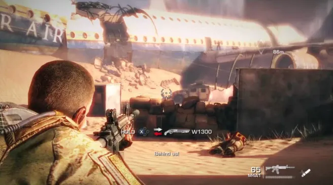
Plataformas: PC, PS3, Xbox 360
Duración: 6–8 horas
Sinopsis: Spec Ops: The Line sigue al capitán Martin Walker y su escuadrón en una misión para investigar una Dubái devastada por tormentas de arena. Lo que comienza como una operación de reconocimiento se transforma rápidamente en una pesadilla moral y psicológica. A medida que avanzan, los soldados se ven obligados a tomar decisiones difíciles que afectan tanto a civiles como a su propia cordura. El juego cuestiona constantemente la naturaleza de la guerra y el impacto de la violencia, rompiendo con los clichés del género shooter. La narrativa se vuelve cada vez más oscura, mostrando las consecuencias reales de las acciones del jugador. Es una experiencia intensa que va más allá de la acción, explorando temas profundos y perturbadores.
Puntuación Metacritic: 76/100
Puntuación OpenCritic: 78/100
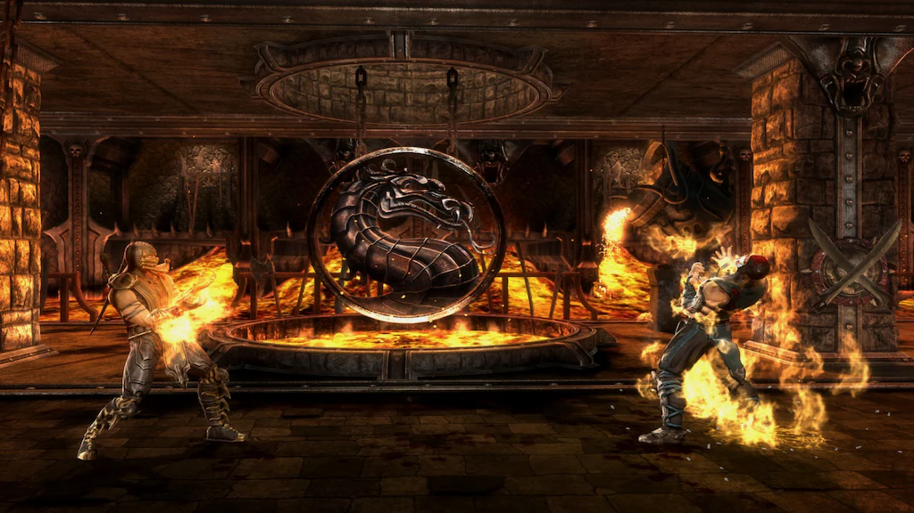
Plataformas: PS3, Xbox 360, PC
Duración: 6–8 horas (modo historia)
Sinopsis: Mortal Kombat (2011), también conocido como MK9, reinicia la línea temporal de la saga tras los eventos apocalípticos del futuro. Raiden, al borde de la derrota, envía un mensaje a su yo del pasado para intentar cambiar el curso de los acontecimientos. A partir de ahí, la historia recorre los eventos de los primeros juegos, pero con cambios importantes que alteran el destino de muchos personajes. El modo historia es uno de los más completos en juegos de lucha, combinando combates intensos con narrativa cinematográfica. El sistema de combate mantiene la esencia clásica, pero introduce mecánicas modernas que lo hacen más dinámico y accesible. Con fatalities brutales, gran variedad de personajes y contenido desbloqueable, es uno de los títulos más importantes de la franquicia.
Puntuación Metacritic: 84/100
Puntuación OpenCritic: 85/100
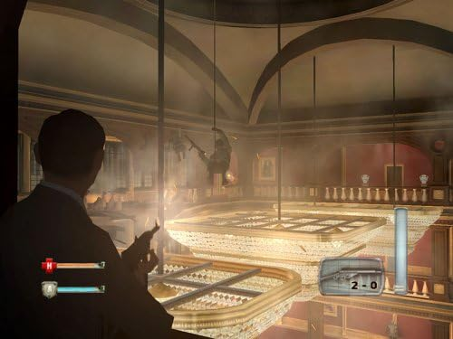
Plataformas: PS2, Xbox, GameCube, PSP
Duración: 8–10 horas
Sinopsis: Basado en la clásica película de James Bond, el juego pone al jugador en la piel del agente 007 en una misión que lo lleva a enfrentarse a organizaciones criminales internacionales. A lo largo de la campaña, Bond deberá infiltrarse en bases enemigas, participar en tiroteos intensos y utilizar una variedad de gadgets característicos de la saga. La historia combina elementos del film original con nuevas situaciones diseñadas para el videojuego, ampliando la experiencia. El juego mezcla acción en tercera persona con momentos de conducción y sigilo, ofreciendo variedad en la jugabilidad. Además, cuenta con la participación del actor original, lo que le da un toque auténtico. Es una experiencia clásica de acción y espionaje dentro del mundo de Bond.
Puntuación Metacritic: 73/100
Puntuación OpenCritic: 74/100
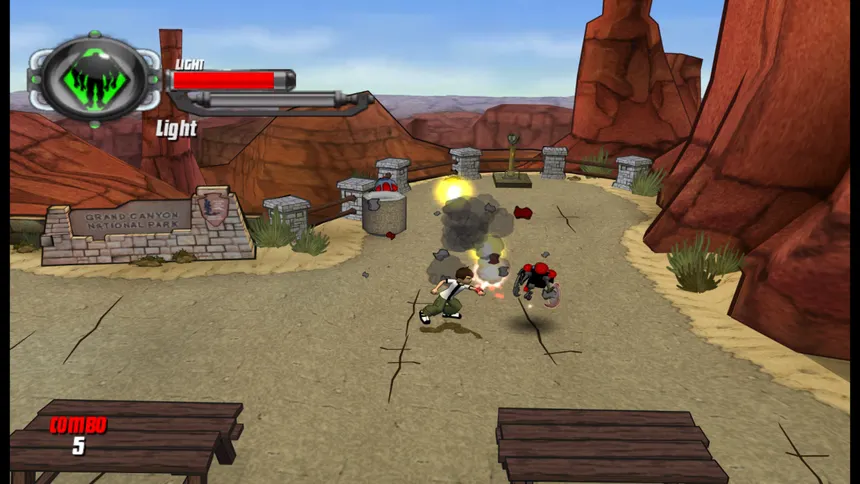
Plataformas: PS2, PSP, Nintendo DS, Wii
Duración: 6–8 horas
Sinopsis: En Ben 10: Protector of Earth, el joven Ben Tennyson se embarca en una aventura para recuperar los fragmentos del Omnitrix, que han sido dispersados por el villano Vilgax. Sin su dispositivo completamente funcional, Ben deberá viajar por distintas ciudades enfrentándose a enemigos clásicos de la serie mientras recupera poco a poco sus habilidades alienígenas. A lo largo del juego, el jugador puede transformarse en varias criaturas icónicas, cada una con habilidades únicas que permiten superar obstáculos y combatir enemigos. La historia mantiene el tono de la serie animada, combinando acción, humor y momentos intensos. Con mecánicas simples pero entretenidas, es una experiencia ideal para fans del personaje y para quienes buscan un juego de acción accesible.
Puntuación Metacritic: 62/100
Puntuación OpenCritic: 63/100
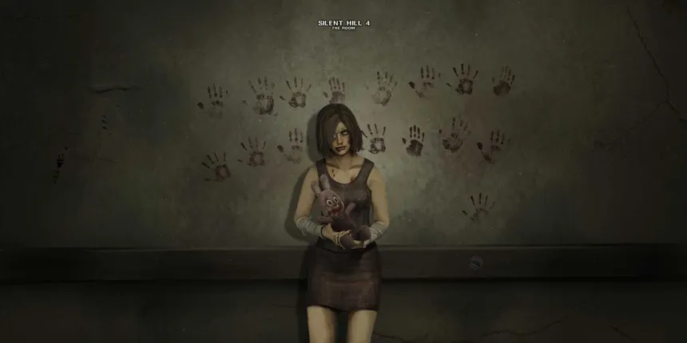
Plataformas: PS2, Xbox, PC
Duración: 10–12 horas
Sinopsis: Silent Hill 4: The Room presenta una historia diferente dentro de la saga, centrada en Henry Townshend, un hombre que despierta atrapado en su propio apartamento sin poder salir. Pronto descubre un misterioso agujero en la pared que lo conecta con mundos extraños y perturbadores. A medida que explora estos escenarios, se enfrenta a criaturas inquietantes y a una narrativa cargada de simbolismo psicológico. El apartamento, que al principio parece seguro, comienza a volverse cada vez más peligroso, generando una sensación constante de incomodidad. La historia profundiza en temas de aislamiento, obsesión y terror psicológico, diferenciándose de otros títulos de la franquicia. Con una atmósfera opresiva y mecánicas únicas, es una entrega distinta pero memorable dentro de Silent Hill.
Puntuación Metacritic: 76/100
Puntuación OpenCritic: 75/100

Plataformas: PC, PS3, PS4, Xbox 360, Xbox One, Nintendo Switch
Duración: 15–20 horas
Sinopsis: Alien: Isolation sigue la historia de Amanda Ripley, quien emprende un viaje para descubrir la verdad detrás de la desaparición de su madre. La investigación la lleva a la estación espacial Sevastopol, un lugar abandonado donde algo ha salido terriblemente mal. A diferencia de otros juegos del género, aquí no hay combate directo constante: el jugador debe sobrevivir ocultándose, improvisando y utilizando el entorno para evitar a un Xenomorfo que aprende de tus movimientos. La inteligencia artificial del enemigo hace que cada encuentro sea impredecible y extremadamente tenso. A medida que avanzas, también deberás enfrentarte a humanos desesperados y androides hostiles. La atmósfera opresiva, el sonido y el diseño del entorno recrean perfectamente el terror de la película original, convirtiéndolo en una de las experiencias más intensas del survival horror moderno.
Puntuación Metacritic: 81/100
Puntuación OpenCritic: 82/100
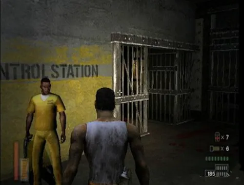
Plataformas: PS2, Xbox, PC
Duración: 8–10 horas
Sinopsis: The Suffering pone al jugador en la piel de Torque, un prisionero condenado a muerte que es enviado a una cárcel ubicada en una isla con un pasado oscuro. Poco después de su llegada, una serie de criaturas grotescas comienzan a atacar el lugar, desatando el caos total. A medida que avanza, Torque comienza a experimentar visiones y fragmentos de su pasado, revelando poco a poco los eventos que lo llevaron a su condena. El juego mezcla acción y terror psicológico, con decisiones morales que afectan el desarrollo de la historia y el final. Las criaturas que aparecen están inspiradas en métodos de ejecución reales, lo que refuerza el tono perturbador del juego. La atmósfera, junto con la narrativa, crea una experiencia intensa donde la línea entre la culpa, la redención y la locura se vuelve cada vez más difusa.
Puntuación Metacritic: 77/100
Puntuación OpenCritic: 78/100
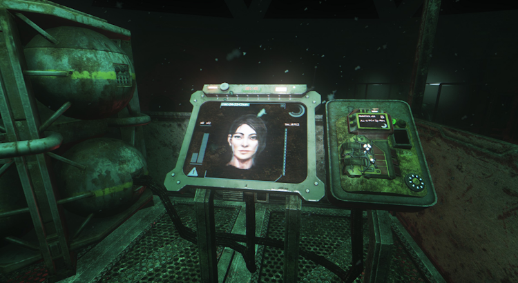
Plataformas: PC, PS4, Xbox One
Duración: 8–10 horas
Sinopsis: SOMA es una experiencia de terror psicológico que va mucho más allá del miedo tradicional. El jugador controla a Simon Jarrett, quien tras un experimento médico despierta en una instalación submarina completamente abandonada. Allí descubre que la humanidad está al borde de la extinción y que las máquinas han desarrollado comportamientos inquietantes. A medida que explora el complejo, se enfrenta a criaturas perturbadoras y a situaciones que cuestionan la identidad, la conciencia y lo que significa ser humano. La narrativa es el punto fuerte del juego, planteando dilemas filosóficos profundos mientras el jugador avanza. No se trata solo de sobrevivir, sino de entender la realidad en la que se encuentra. La combinación de atmósfera, historia y tensión constante convierte a SOMA en una experiencia única dentro del género.
Puntuación Metacritic: 84/100
Puntuación OpenCritic: 85/100
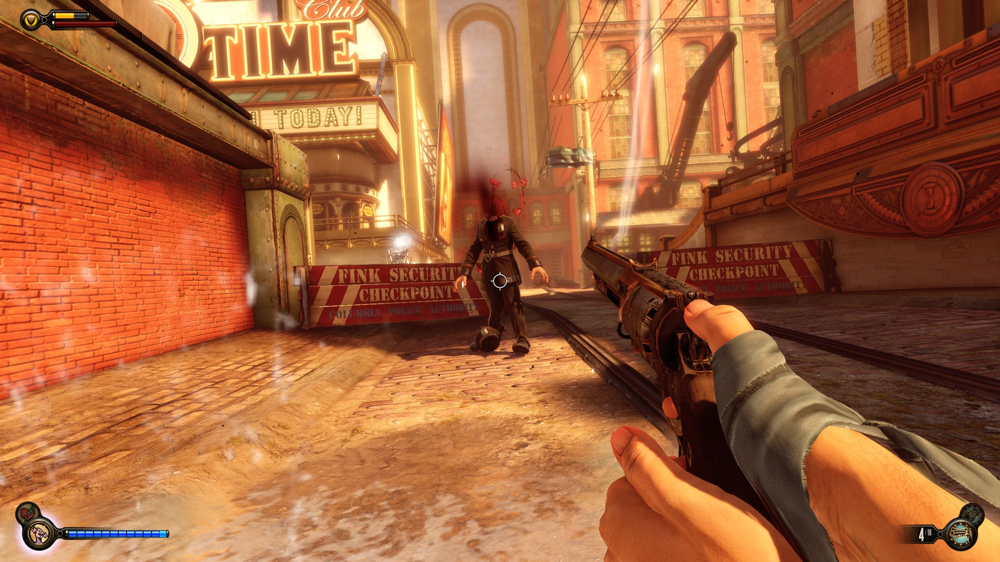
Plataformas: PC, PS3, PS4, Xbox 360, Xbox One
Duración: 10–12 horas
Sinopsis: BioShock Infinite transporta al jugador a Columbia, una ciudad flotante que parece perfecta a simple vista pero que esconde una sociedad profundamente dividida y peligrosa. El protagonista, Booker DeWitt, es enviado a rescatar a Elizabeth, una joven con habilidades misteriosas que resultan clave para comprender la realidad de ese mundo. A medida que avanzan, la relación entre ambos personajes se vuelve el eje central de la historia. El juego combina acción en primera persona con una narrativa compleja que aborda temas como el destino, las realidades alternativas y las decisiones humanas. Cada enfrentamiento está acompañado por poderes especiales y un diseño visual impresionante. A medida que se acerca el final, la historia toma giros inesperados que dejan una fuerte impresión en el jugador, convirtiéndolo en uno de los títulos más memorables de su generación.
Puntuación Metacritic: 94/100
Puntuación OpenCritic: 93/100

Plataformas: PC
Duración: 6–8 horas
Sinopsis: Cry of Fear sigue la historia de Simon, un joven que despierta herido en una ciudad oscura y aparentemente abandonada. A medida que intenta encontrar una salida, se ve envuelto en una pesadilla donde la realidad y la mente comienzan a mezclarse. El juego combina exploración, combate limitado y gestión de recursos, obligando al jugador a tomar decisiones constantes bajo presión. Las criaturas que aparecen representan miedos internos y traumas psicológicos del protagonista. La narrativa se vuelve cada vez más compleja, revelando temas como la depresión, la soledad y la desesperación. Con múltiples finales y una atmósfera extremadamente opresiva, Cry of Fear se convierte en una experiencia intensa que va más allá del terror convencional.
Puntuación Metacritic: N/A
Puntuación OpenCritic: N/A

Plataformas: PC, PS3, Xbox 360
Duración: 6–8 horas
Sinopsis: The Darkness II continúa la historia de Jackie Estacado, quien ahora controla completamente un poder demoníaco conocido como “La Oscuridad”. Mientras intenta llevar una vida aparentemente normal, una nueva organización comienza a perseguirlo con el objetivo de arrebatarle ese poder. El juego combina disparos en primera persona con habilidades sobrenaturales, permitiendo al jugador atacar con armas y tentáculos demoníacos al mismo tiempo. A medida que avanza, la historia explora la mente del protagonista, mostrando visiones que cuestionan qué es real y qué no. El estilo visual tipo cómic y la violencia estilizada le dan una identidad única. La mezcla de acción intensa y narrativa psicológica lo convierten en una experiencia diferente dentro del género.
Puntuación Metacritic: 83/100
Puntuación OpenCritic: 82/100

Plataformas: PS3, PS4, PC
Duración: 10–12 horas
Sinopsis: Heavy Rain es una experiencia narrativa donde el jugador controla a varios personajes involucrados en la búsqueda del “Asesino del Origami”, un criminal que secuestra niños y deja pistas en forma de figuras de papel. A lo largo de la historia, cada decisión afecta el desarrollo de los eventos, pudiendo cambiar completamente el destino de los personajes. La jugabilidad se basa en acciones contextuales, exploración e interacción con el entorno, poniendo el foco en la historia y las emociones. A medida que avanza, la tensión aumenta y las situaciones se vuelven cada vez más desesperadas. El juego aborda temas como la pérdida, la culpa y el sacrificio, creando una experiencia intensa y muy personal. Cada elección importa, y no todos los personajes sobrevivirán.
Puntuación Metacritic: 87/100
Puntuación OpenCritic: 85/100
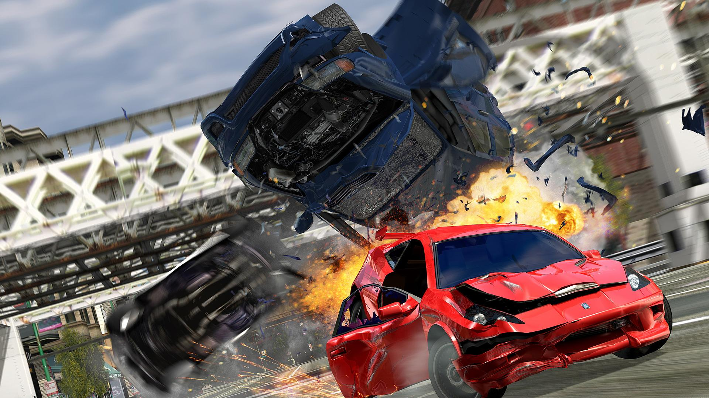
Plataformas: PS2, Xbox
Duración: 12–15 horas
Sinopsis: Burnout 3: Takedown es un juego de carreras arcade que lleva la velocidad y la destrucción al extremo. A diferencia de otros juegos del género, aquí no solo importa llegar primero, sino también eliminar a tus oponentes del camino mediante choques espectaculares. El sistema “Takedown” recompensa al jugador por conducir agresivamente, incentivando maniobras arriesgadas y accidentes a alta velocidad. Los modos de juego incluyen carreras, desafíos y el icónico modo Crash, donde el objetivo es causar el mayor daño posible. La sensación de velocidad, junto con una banda sonora energética, crea una experiencia intensa y adictiva. Es considerado uno de los mejores juegos de conducción arcade de todos los tiempos.
Puntuación Metacritic: 94/100
Puntuación OpenCritic: 93/100